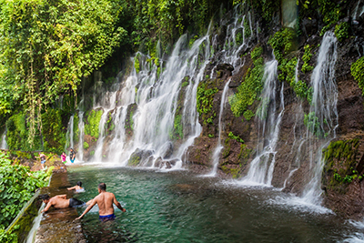
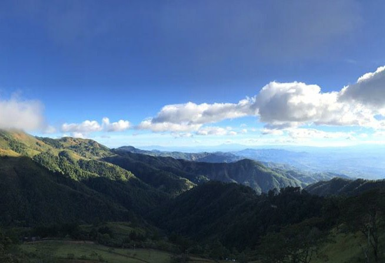
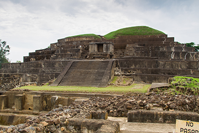
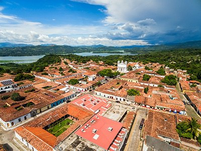
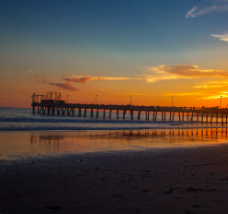
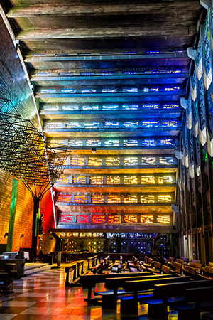
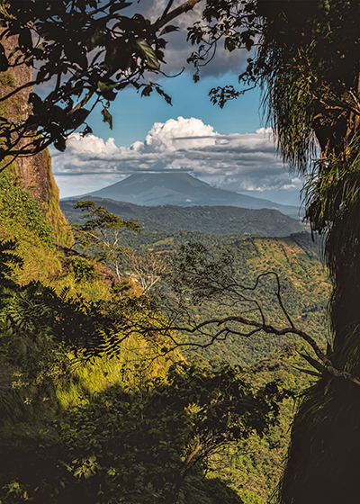
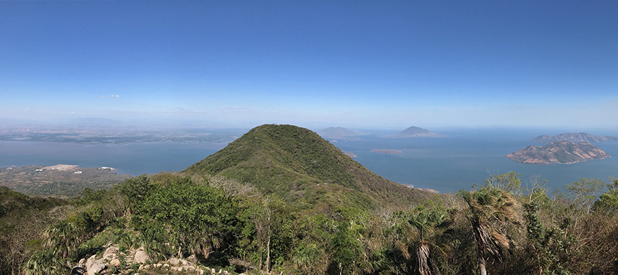

Rutas Turísticas
-

Ruta de Las Flores
Atiquizaya, Ahuachapán, Ataco, Apaneca, Juayúa, Salcoatitán, Nahuizalco Aventura y naturaleza, deportes extremos (canopys, buggies, juegos de cuerdas altas, rappel mojado, barranquismo, ciclismo de montaña, cascadas, ríos, lagunas termales, , flora y fauna, bosques tropicales y clima templado. En la Ruta de las Flores encontramos cultura y gastronomía autóctona, tradiciones y costumbres. Una ruta reconocida a nivel nacional e internacional.
-

El Paseo del Jaguar Chasca y Atonal
Jujutla,San Francisco Menéndez, Acajutla Este circuito constituye un verdadero tesoro natural en el cual encontramos la reserva El Imposible, un pulmón de la zona occidental con abundante fauna y flora en su estado natural; la playa de Los Cóbanos que posee la mayor concentración de arrecifes de coral en todo el país acompañada de las impresionantes playas en Salinitas y Los Almendros. Además, en San Francisco Menéndez se encuentra la Reserva Santa Rita en donde aún habitan fósiles vivientes de pez Machorra y Las Cascadas de Don Juan en Jujutla.
-

El Rincón Maya de El Salvador
Chalchuapa, El Refugio, San Lorenzo Un verdadero tesoro arqueológico y natural en donde pueden apreciarse joyas ancestrales como El Tazumal, Casa Blanca y otros sitios arqueológicos. También dentro de este circuito se encuentra el Río Grande y extensos cultivos de jocote y loroco de San Lorenzo.
-

Voces Históricas Vivas
Arcatao, Nueva Trinidad, San José Las Flores, San Antonio Los Ranchos Un recorrido por municipios emblemáticos de la historia reciente de El Salvador que ofrece incontables sitios históricos, impactantes historias contadas por sus habitantes y un territorio donde se respira un nuevo ambiente de paz. La región cuenta con el Cerro Eramón, un recurso natural lleno de historia y hermosas vistas panorámicas. Además, el circuito cuenta con magníficos sitios de aguas cristalinas como cascadas, pozas, ríos y también cerros donde se puede practicar ecoturismo o visitar el Museo de Mártires del Súmpul.
-

Cumbres del Mar
La Libertad, Tamanique, Chiltiupán, Teotepeque, Jicalapa Uno de los circuitos más reconocidos por sus playas en donde se puede disfrutar de las bellezas de las costas internacionalmente reconocidad por poseer las mejores olas del mundo para practicar surf. En este circuito pueden visitarse El Malecón del Puerto de La Libertad, donde se encuentra la más variada oferta de artesanías y gastronomía típica de la zona incluyendo mariscos, frescos y recién extraídos del mar.
-

Destinos Modernos
Santa Tecla, Antiguo Cuscatlán, San Salvador (La Gran Zona Rosa), Tepecoyo Un circuito que pretende satisfacer los gustos más exquisitos con elegantes restaurantes, bares y Centros Comerciales además de ofrecer turismo nocturno en lugares históricos como el Paseo El Carmen en Santa Tecla y Centros Comerciales en Antiguo Cuscatlán. Además, se puede disfrutar de los paseos al Boquerón, Plan de la Laguna y el municipio de Tepecoyo en donde se aprende acerca de los procesos de extracción de bálsamo ofreciendo una oportunidad de acercamiento con la naturaleza cerca de la ciudad.
-

Joyas del Sur
Rosario de Mora, Panchimalco, San Marcos, Santo Tomás Este circuito es una mezcla de tradiciones, gastronomía y belleza natural a escasos kilómetros de la capital en el departamento de San Salvador. Aquí se encuentra un imponente panorama desde La Puerta del Diablo donde puede apreciarse el municipio de Panchimalco, pueblo vivo lleno de tradiciones, colores e impresionantes comunidades originarias.
En sus cumbres pueden disfrutarse las más reconocidas pupusas de maíz de la región y de imponentes atardeceres en el Parque Balboa. -

Costa Oriental
Meanguera del Golfo, La Unión, Conchagua, Intipucá, Chirilagua Verdaderos paraísos naturales con una gran variedad de recursos y múltiples islas que conforman el Golfo de Fonseca, vistas panorámicas desde el mirador del majestuoso volcán de Conchagua, las playas El Tamarindo, Playas Negras, El Jaguey, el Puerto Cutuco, Playa el Icacal, Playa El Esterón, la Sierra Jucuarán, Cerro La Panela, Muelle Los Coquitos, Isla Zacatillo, Meanguera y Meanguerita.